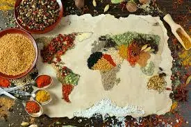
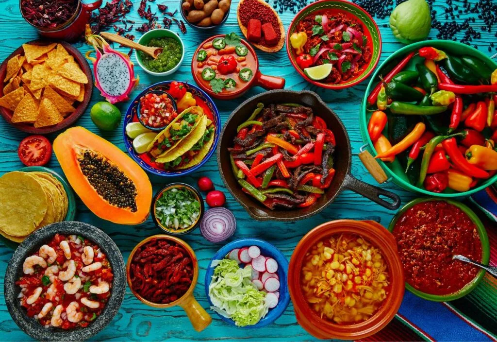

La gastronomía es una de las formas más ricas y diversas de expresión cultural en el mundo. Cada país ha desarrollado sus propias tradiciones culinarias, influenciadas por su historia, geografía y costumbres. Entre las muchas cocinas que destacan a nivel global, algunas han sido reconocidas por la UNESCO como Patrimonio Inmaterial de la Humanidad, lo que resalta su importancia cultural y su contribución a la identidad de los pueblos.
Las gastronomías más famosas e importantes del mundo incluyen la cocina francesa, conocida por su sofisticación y técnicas culinarias refinadas, la italiana, famosa por su diversidad y el uso de ingredientes frescos, y la japonesa, que combina estética y salud en sus platos. La cocina mexicana, rica en sabores y marcada fuertemente con tradiciones ancestrales, también ha ganado reconocimiento internacional. Otras gastronomías notables son las de India, con su gran uso de especias, la tailandesa y la mediterránea, que destaca por sus ingredientes frescos y saludables.
Un dato interesante es que muchas de estas cocinas no solo son apreciadas por sus sabores únicos, sino también por la forma en que han influido en la gastronomía global. Por ejemplo, la cocina italiana ha dado lugar a una amplia variedad de platos que se han adaptado en diferentes culturas alrededor del mundo. Además, el auge del turismo gastronómico ha permitido que personas de diversas nacionalidades se familiaricen con estas tradiciones culinarias, creando un intercambio cultural enriquecedor.
En este contexto, explorar las gastronomías más reconocidas no solo es un deleite para el paladar, sino también una oportunidad para entender mejor las historias y tradiciones que cada plato representa. Por lo que si te es interesante, puedes consultar los platos más icónicos dirigiéndote a los sitios web disponibles en la parte superior, también puedes encontrar más artículos en la página de la UNESCO, algunos artículos destacables son “La comida gastronómica de los franceses”, “Washoku: tradiciones culinarias de los japoneses, en particular para festejar el Año Nuevo”, “La cocina tradicional mexicana: Una cultura comunitaria, ancestral y viva y el paradigma de Michoacán”, “Gastronomía mexicana: Patrimonio Cultural Inmaterial de la Humanidad” y “La dieta mediterránea”.
